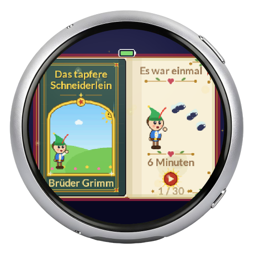
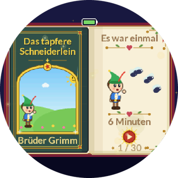
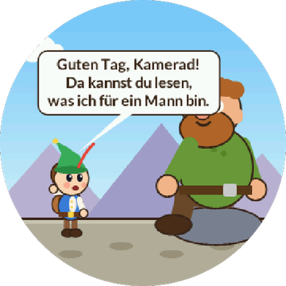
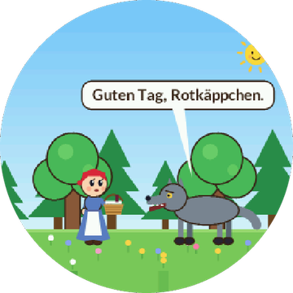
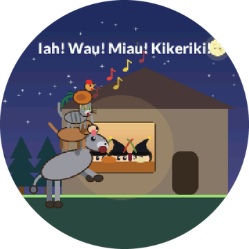
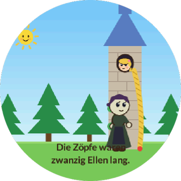
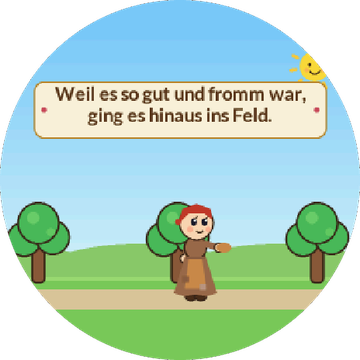
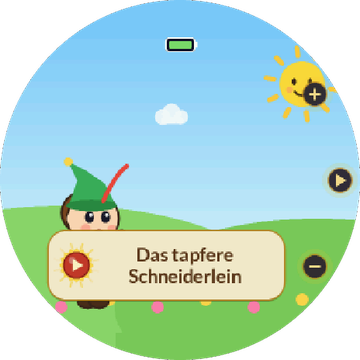

Online-Flasher · 30 Spieluhr-Filme auf einem runden Display, live gezeichnet und vertont

Waveshare ESP32-S3-Touch-AMOLED-1.75C: rundes 1,75″-AMOLED (466×466) mit Touch, Lautsprecher und Akku. Die Märchen füllen den ganzen Kreis; bedient wird durch Tippen oben, in der Mitte oder unten.







Neue Firmware – WLAN und Einstellungen bleiben. Bei „Erase device?“ den Haken nicht setzen.
Speicher komplett löschen und neu aufspielen – für neue Boards oder wenn gar nichts mehr geht. WLAN und Einstellungen sind danach weg.
Version __VERSION__
Gebaut mit PlatformIO · Quellcode auf GitHub · Online-Flasher: ESP Web Tools